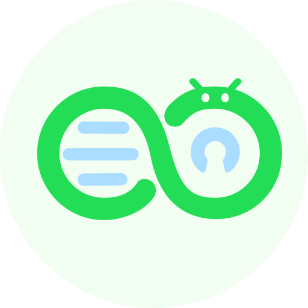
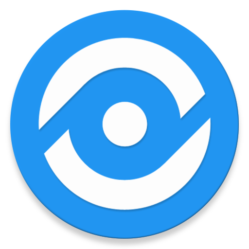
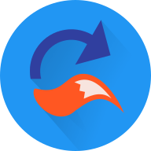
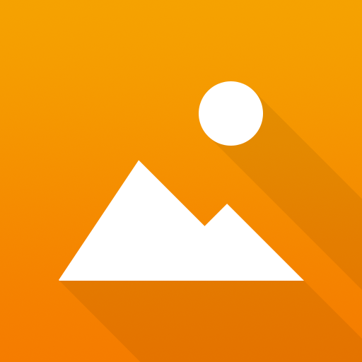
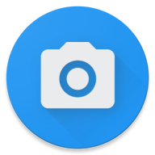

Android Apps
Heel veel apps hier zijn te installeren via F-Droid. Dit is een FOSS app store en je kan allemaal apps installeren. Soms moet je een repository (ook wel repo) toevoegen, om meer downloads te kunnen krijgen. In plaats van F-Droid raad ik wel Neo Store (FOSS) aan, omdat dit een stuk beter is dan normaal F-Droid.
Aurora Store (FOSS)
Aurora store is ook een FOSS app store. F-droid kan geen apps installeren van Google Play Store, maar Aurora Store wel!
NewPipe (FOSS) en Youtube ReVanced (FOSS)
NewPipe is een lichte versie van youtube met ingebouwde adblocker. Met Newpipe kan je niet inloggen en misschien van je ReVanced fijner. Youtube ReVanced is een alternatief voor Youtube Vanced (deze wordt nu niet meer gemaakt) en is simpelweg gratis, nog betere, Youtube premium. Youtube ReVanced moet je zelf patchen met de ReVanced Manager. Als je niet de goede versie hebt, moet je die eerst downloaden van APKMirror.


AdGuard DNS (FOSS)
AdGuard DNS is een adblocker voor Android. Om AdGuard DNS te gebruiken moet je eerst naar Settings > Connections > More connection settings > Private DNS > Private DNS provider hostname > typ het volgende: "dns.adguard-dns.com".
K-9 Mail (FOSS)
K-9 Mail is een mail client voor Android. Je kan het helemaal aanpassen en het heeft veel functies. K-9 mail staat op F-Droid.
FlorisBoard (FOSS)
FlorisBoard is een toetsenbord voor Android (net als Gboard of Samsung Keyboard). Het heeft heel veel functies en is gemakkelijk te gebruiken.

Unitto (FOSS)
Unitto is een open source rekenmachine, converter en nog veel meer.
Organic Maps (FOSS)
Organic Maps is een map voor Android, net als Google Maps. Het heeft vele features en je kan zelfs mappen van de wereld downloaden om het offline te gebruiken!
Twire (FOSS)
Twire is een Twitch client en is gemaakt voor privacy.
Binary Eye (FOSS)
Binary Eye is een barcode en QR code scanner.
FFUpdater (FOSS)
FFUpdater is een app om alle privacy browser te downloaden. Dit is dus niet alleen voor Firefox, maar ook voor vele andere browsers.
Simple Gallery Pro (FOSS)
Simple Gallery Pro is een app om je foto's en video's te bekijken. Het is gemaakt door Simple Mobile Tools.
Open Camera (FOSS)
Open Camera is een open source camera voor Android. Het kan 4K foto's en video's maken en heeft veel features.
